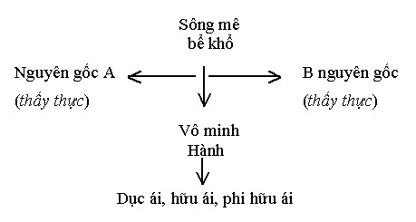
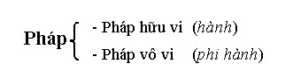
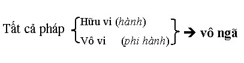
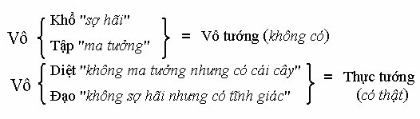
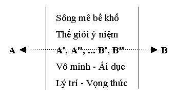

|
Thực Tại Hiện Tiền Viên Minh |
|
BuddhaSasana Home Page |
Vietnamese, with Unicode Times font |
|
|
Thực Tại Hiện Tiền Viên Minh |
|
[08] TRỞ LẠI BÁT NHÃ TÂM KINH 25-11-93 C húng ta đã biết qua sự tương tác của căn-trần-thức, từ đó phát sanh sự vận hành của ngũ uẩn. Và chúng ta cũng đã biết tiến trình tâm. Thập nhị nhân duyên cũng vậy, đều là những tiến trình tâm, lúc sinh khởi, lúc không sinh khởi.Tất cả những điều đó giúp chúng ta dễ dàng đi vào kinh Bát Nhã. Vậy chúng ta hãy trở lại kinh Bát Nhã một lần nữa. * Quán Tự Tại Bồ Tát: người ta thường giải thích Quán Tự Tại là một nhân vật, là Đức Quán Thế Âm. Nhưng thật ra Đức Quán Thế Âm là một nhân vật biểu tượng. Ở đây lại không nói là Quán Thế Âm mà gọi là Quán Tự Tại. Cho nên, dầu Quán Tự Tại có là một biểu tượng đi nữa thì ngay trên ngôn ngữ cũng đã hàm một ý nghĩa: Quán tức là soi chiếu. Tự tại là trọn vẹn chính mình, trọn vẹn nơi tự thân, trọn vẹn với cái đang là hiện hữu tại đây và bây giờ. Ở nơi mình đây nghĩa là ở nơi căn, trần và thức này (6 căn + 6 trần + 6 thức). Quán tự tại không có nghĩa là cứ dòm vô bên trong mình đâu. Có nhiều người tưởng lầm "hồi quang phản chiếu" là quay vô bên trong mình, là tuyệt đối nội quán. Không phải thế, quán tự tại là soi chiếu từ nơi sự sống đang vận hành, tức là toàn bộ căn-trần-thức, khổ, lạc, xả v.v... đó là Quán Tự Tại. Dùng chữ tự tại rất hay. Thiền tông thì dùng chữ "kiến tánh". Mặc dù kiến tánh là đúng, nhưng chữ "kiến tánh" có thể gợi lên một ý sai, bởi vì kiến tánh thì người ta dễ nghĩ không kiến tướng, kiến dụng, kiến thể, kiến nhân, kiến quả hay sao? Kiến tánh theo Thiền Tông, thật ra, bao gồm tất cả các kiến ấy, là toàn diện, chứ không phải tánh với nghĩa là bản thể của bản thể luận ngoại đạo. Có người tham công án để mong đạt được "bản thể vĩnh hằng" gì đó là thường kiến rồi. Không phải đâu! Không có cái bản thể không tưởng ấy đâu! Vậy dùng chữ "quán tự tại" hay hơn, chính xác hơn. Tự tại bao hàm tánh, tướng, thể, dụng, nhân, quả, duyên, báo... còn nói kiến tánh dễ bị lầm lẫn tai hại. Người ta tưởng là sẽ "kiến được một cái tánh gì đó". Kiến tánh đúng nghĩa của Thiền Tông là trả lại nguyên bản chất của pháp. Không phải thể tánh đối đãi với hình tướng. Cho nên, quán tự tại là soi chiếu toàn bộ sự tương giao nơi sự sống đang vận hành. Bồ Tát: chữ "Bồ Tát". Cũng cần được minh định lại. Bồ Tát là bodhisatta, thường âm là Bồ đề Tát Đỏa. Bodhi là tuệ giác. Satta là chúng sinh hữu tình. Người Trung Hoa dịch là giác hữu tình và hữu tình giác tức là người tự giác giác tha. Người có tuệ giác, sống với tuệ giác hoặc tu hành bằng tuệ giác là người tự giác. Người tự mình có tuệ giác và chỉ cho người khác biết sử dụng tuệ giác của họ là người giác tha. Giác tha thường dễ bị lạm dụng trở thành nghĩa cứu rỗi của Thượng Đế hoặc thần linh, khiến người ta ỷ lại vào tha lực. Trong khi Phật dạy: Tự mình thắp đuốc lên mà đi, nghĩa là muốn giác tha trước tiên phải tự giác. Tự giác cũng bị hiểu lầm là hành động ích kỷ. Thật ra bất cứ ai đạt đến tự giác đều có giác tha tùy theo công hạnh. Mục đích cuối cùng của đạo Phật là thành Phật, dù là Thanh Văn Phật (Sāvaka Buddha), Độc Giác Phật (Pacceka Buddha) hay Toàn Giác Phật (Sabbaññū Buddha). Cho nên tu Thanh Văn, Độc Giác hay Toàn Giác đều là Bồ Tát cả. Trong đạo Phật không bao giờ có người giác ngộ mà còn ích kỷ, bởi vì ích kỷ thuộc bất thiện mà người giác ngộ đã vượt qua cả thiện lẫn bất thiện rồi. Hơn nữa Thanh Văn Phật, Độc Giác Phật, hay Toàn Giác Phật đều tu ba-la-mật cả. Bậc Thanh Văn Phật phải thành tựu 10 pāramī, bậc Độc Giác Phật phải thành tựu 10 upa pāramī và bậc Toàn Giác Phật phải thành tựu 10 paramattha pāramī. Nghĩa là công hạnh (dụng) của Phật Toàn Giác nhiều hơn, chứ không phải Thanh Văn Giác và Độc Giác không có giác tha. Chúng ta không thể tưởng tượng được rằng một người hành thâm Bát Nhã Ba la mật đa và chiếu kiến ngũ uẩn giai không lại là ích kỷ. Chiếu kiến ngũ uẩn giai không thì chẳng còn một tí tẹo nào cho bản ngã sanh khởi, phải không? Người mà đã thấy rõ sự thật rồi, đã sống với sự thật ấy, lại còn chỉ cho người khác cách sống với sự thật ấy là Bồ Tát đích thực rồi. Ngài Punna, một vị Thanh Văn vào thời Đức Phật còn tại thế, đã tình nguyện đến xứ Sunāparanta hoằng pháp bất chấp mọi tình huống nguy hiểm đến tính mạng, thì Thanh Văn đâu phải là ích kỷ. Đức Phật cũng dạy các vị Thanh Văn chia ra nhiều hướng để truyền thuyết con đường giác ngộ, v ì lợi ích chúng sinh, vì sự an lạc cho đời, thì Thanh Văn cũng có lòng vị tha vậy. Bồ Tát đích thực không có đeo loon, không có đẳng cấp, không cần bất kỳ một nhãn hiệu nào. Người giác ngộ ví như mặt trời. Mặt trời thì chiếu sáng, đấy là chức năng của mặt trời. Những vị giác ngộ giúp cho người khác là điều tự nhiên, là chuyện đương nhiên.Như vậy, ai tự hành đúng đắn theo đạo giác ngộ thì cũng đều là Bồ Tát cả. Có người hỏi: - Người ta thường nói tu Thanh Văn khác, tu Bồ Tát khác chúng ta nên hiểu ra sao? - Thật ra hồi nãy chúng ta đã nói rồi. Người nào đang tu đúng theo Phật đạo đều là Thanh Văn mà cũng đều là Bồ Tát cả. Nhưng Bồ Tát có 3 bậc: Bồ Tát hạnh Thanh Văn, Bồ Tát hạnh Độc Giác và Bồ Tát hạnh Toàn Giác. Cả 3 bậc đều cùng tu thập độ, nhưng bậc thứ nhất nhất chủ về thể, bậc thứ hai chủ về tướng, bậc thứ ba chủ về dụng. Như vậy nói 3 bậc là nói theo tác dụng nhưng cùng một thể tánh. Thể tánh bổn lai thanh tịnh đó gọi là A-La-Hán. Người ta thường hiểu lầm quả vị A-La-Hán để dành cho Thanh Văn. Thật ra tuy nói Phật Thanh Văn, Phật Độc Giác và Phật Toàn Giác là nói theo tướng dụng, chứ cả 3 đều cùng đắc một quả vị A-La-Hán như nhau và đều gọi là Phật. Ví như cùng tốt nghiệp bác sĩ nhưng người thì đi dạy y khoa, người thì đi chữa bệnh, người lại làm phòng thí nghiệm v.v..., công dụng khác nhau nhưng cũng là bác sĩ. - Xin hỏi vì sao thầy lại nói ai giác ngộ cũng đều cũng đều là Thanh Văn cả? - Đúng vậy. Ví như một ông bác sĩ đang dạy học thì gọi là giáo sư, còn những người học y khoa tốt nghiệp bác sĩ gọi là sinh viên tốt nghiệp y khoa. Sự thật ai cũng là bác sĩ cả mà một bên là giáo sư một bên là sinh viên. Và ông bác sĩ giáo sư cũng đã từng là bác sĩ sinh viên chứ đâu phải tự nhiên mà có. Bác sĩ giáo sư ví như Phật Toàn Giác, bác sĩ sinh viên ví như Phật Thanh Văn. Các vị có đọc bài kinh Sambudhe (chư Phật Toàn Giác) không? Trong bài kinh có khẳng định rằng, bậc Toàn Giác hạnh trí tuệ như Đức Bổn Sư Thích Ca của chúng ta, đã từng nghe pháp của 512.000 vị Toàn Giác quá khứ và cuối cùng được 28 vị toàn giác thọ ký từ Phật Nhiên Đăng cho đến Phật Ca Diếp. Như vậy Phật toàn giác cũng đã từng nghe pháp (sāvaka) nghĩa là Thanh Văn. Bậc Toàn Giác hạnh tinh tấn và đức tin lại còn học đạo kiểu Thanh Văn nhiều hơn gấp đôi gấp ba lần như vậy nữa. Vậy đừng chấp danh từ, chúng ta không thể hiểu nổi mật hạnh Bồ Tát làm Thanh Văn và Thanh Văn làm Phật đâu, đừng lạm bàn mà mang tội vô ích. * Bát Nhã Ba La Mật Đa: phát xuất từ chữ Paññā pāramitā tức là trí tuệ bờ bên kia. Trước hết ta hãy xem bài kệ của Đức Phật trong kinh Pháp cú rồi so sánh với vài đoạn kinh văn trong Bát Nhã. "Sabbe Sankhārā aniccā'ti Nghĩa là: "Tất cả các hành đều
vô thường Sankhārā trong câu 1 là hữu vi hay hành tức là các pháp duyên khởi trong thế giới tự nhiên cho nên là vô thường (aniccā). Sankhārā trong câu 2 ám chỉ hành trong hành uẩn nghĩa là tâm tạo tác các nghiệp cho nên là khổ (dukkha). Chữ Dhammā trong câu 3 nghĩa là pháp gồm cả hữu vi (2 loại hành trên) và vô vi, ngoại pháp và nội pháp cho nên là vô ngã (anattā). Lát nữa chúng ta sẽ trở lại vấn đề này. Paññāya passati là thấy hoặc quán chiếu, chiếu kiến bằng trí tuệ bát-nhã. Chữ Dukkhe ở đây có nghĩa là khổ đế. Khổ đế không phải là khổ thọ mà hàm chỉ tất cả các cảm thọ khổ, lạc, xả hoặc các cảm thọ thanh lương hơn như hỷ, lạc, xả trong các trạng thái thiền định. Vậy khổ là cảm giác sinh diệt, trống không và ảo hóa (māyā), hư huyễn, không thực hữu... tuy là ảo giác nhưng khó kham nhẫn. Nibbindāti có nghĩa là thoát ly hay nhàm chán. Nhàm chán là bởi sao? vì chúng sinh thường tưởng cái khổ là lạc. Chỉ có một trình độ cao hơn mới thấy chúng sinh đó khổ, nhưng y thì không tự biết vì đối với y là lạc. Cõi sắc giới thì thấy chúng sinh dục giới là khổ. Cõi vô sắc giới thì thấy chúng sinh sắc giới là khổ. Người giác ngộ giải thoát thì thấy chúng sinh ba giới là khổ. Cho nên chữ Nibbindāti nghĩa bóng là thoát ly, nghĩa đen là nhàm chán. Nhàm chán là đúng. Thấy chúng sinh lặn hụp, tranh giành nhau danh lợi như lũ ruồi trong đống rác kia, không nhàm chán sao được? Esa là đó. Maggo là con đường, visuddhi là thanh tịnh: đó là thanh tịnh đạo. Đến đây chúng ta so sánh với câu "hành thâm bát nhã Ba La mật đa thời, chiếu kiến ngũ uẩn giai không độ nhất thiết khổ ách" thì có giống nhau không? Đúng không? Bên nào cũng dùng trí tuệ Bát Nhã để quán chiếu cả. Bài kinh pháp cú thì dạy rằng hãy dùng trí tuệ để thấy rõ các hành là vô thường, khổ, các pháp là vô ngã. Bài kinh Bát Nhã thì dùng trí tuệ để soi chiếu cho thấy ngũ uẩn là không. Cả hai đều thoát khỏi khổ đế. Vậy, các hành, các pháp có liên hệ với ngũ uẩn ra sao? Chúng ta thấy rõ ngũ uẩn là sắc, thọ, tưởng, hành, thức. Trong ngũ uẩn hành là chủ động, làm cho chồng chất rối rắm. Khi trí tuệ soi chiếu thì hành diệt. (Hành là các tâm sở do tư tác động, hoặc là ái thủ hữu). Hành được thay thế bằng tuệ (bát-nhã=paññā) thì trả ngũ uẩn về với bản chất đích thực của chúng. Trả pháp lại cho pháp, đấy là ngũ uẩn giai không và thoát khỏi khổ đế. Trở lại sankhārā là hữu vi hay hành. Hành có 2 loại như hồi nãy chúng ta đã nói qua. - Thứ nhất: hành là thế giới trùng trùng duyên khởi của tự nhiên (tạm gọi là thuộc ngoại giới so với hành trong ngũ uẩn hoặc trong Thập nhị nhân duyên là thuộc nội giới). Ví dụ như vật chất do tứ đại duyên hợp mà thành. Vì có duyên hợp mà sinh nên duyên tan thì diệt. Tính chất của nó là vô thường tan hợp nên gọi là Sabbe sankhārā aniccā'ti hay uppadavaya dhammino. Và Duy Thức gọi y tha khởi tánh hoặc sinh vô tánh như chúng ta đã nói trước đây. - Thứ hai: hành là tạo tác chủ quan thuộc thế giới nội tâm. Ví dụ tâm tham, sân, si, ngã mạn, tà kiến v.v... cũng do duyên hợp mà sinh, duyên tan mà diệt, như khi có xúc, thọ, tưởng, tư và các nhóm tâm sở tương ưng hợp lại thì một tâm hiện khởi, khi hết duyên thì biến mất. Tuy nhiên, sự kết hợp này không tự nhiên mà là chủ quan, cố ý. Dĩ nhiên tính chất của hành này cũng vô thường nhưng chính yếu là khổ não nên gọi là sabbe sankhārā ca dukkhā'ti. Duy Thức gọi là biến kế sở chấp tánh hoặc tướng vô tánh. Loại hành thứ hai này mới là vấn đề. Nó chính là hành uẩn trong ngũ uẩn và hành (ái, thủ, hữu) trong Thập nhị nhân duyên. Hành này đóng vai trò chính trong việc tạo tác luân hồi sinh tử hoặc thiện ác trong 3 cõi 6 đường. Vậy hành này tác động như thế nào? Ví dụ, khi mình nhìn một người, một đối tượng mà để cho vô minh và hành chi phối, thì người ấy, đối tượng ấy, biến đổi theo bản ngã của mình. Giả sử chúng ta gọi mình là A và đối tượng là B. khi A tương quan với B. Qua hành A tự vong thân để tự mặc cho mình một bản ngã A'. Bản ngã A' dĩ nhiên chủ quan nên nhìn đối tượng B cũng biến thành B'.
Khi hành tham dự thì cả thế giới bên ngoài và bên trong đều biến dạng hết, không còn đúng nguyên gốc nữa, có phải vậy không? Điều này rất là vi tế và cũng rất là kinh khiếp. Trong đời sống hằng ngày chúng ta nên chiêm nghiệm xem thử mình đã nghe thực, thấy thực hay mình đã trở thành A' và đối tượng trở thành B' tự bao giờ! Thảm kịch trần gian là ở chổ đó, nên Phật dạy: chư hành là khổ. Đấy l à mới phần bên A tự biến thành A'. Còn B thì sao? Nếu A' nhìn B ra B' thì B cũng tự biến mình thành B''. B'' mà nhìn lại A thì A đó cũng bị bóp méo thành A''. Vì bao giờ cũng vậy, chủ quan của A khác, chủ quan của B khác, phải không?
Sự biến đổi từ A ra A', A'' và từ B ra B', B'' cũng nói lên tính chất vô thường, nhưng là vô thường chủ quan, tự ý biến đổi, chính vô thường này mới đem lại khổ não. Từ tham qua sân, từ thương đến ghét, đó là vô thường của hành chủ quan mà sinh ra sầu, bi, khổ, não, lạc, hỷ v.v... Còn A và B có biến đổi không? A và B nguyên gốc cũng có biến đổi vô thường nhưng là khách quan, biến đổi sinh-vật lý, biến đổi theo định luật tự nhiên nên vô thường mà vẫn thường. Còn biến đổi tâm lý, biến đổi do cảm tính chủ quan mới là vấn đề. Do cảm tính chủ quan mình vẽ vời ra đủ mọi thứ. Trong 5, 7 phút mình có thể họa ra không biết bao nhiêu cái ngũ uẩn như vậy.
Nói tóm lại, khi mà hành phát sanh thì nó biến đổi sắc, thọ, tưởng, và thức theo hành luôn. Có đúng không? Hành là tư, là tạo tác, là cetanā. Nếu thay tư bằng tuệ thì A tự thấy mình là A, B tự thấy mình B (tuệ là tri như thực, kiến như thực), rõ ràng toàn bộ A', A'' - B', B'' biến mất. Như vậy là qua bên bờ kia (pāramitā) phải không? Vậy khi hành thâm bát-nhã-ba-la-mật-đa mà thấy rõ ngũ uẩn chỉ do hành điều động, chi phối, vẽ vời, thêm thắt chỉ là ảo giác, ảo tưởng, vọng động, biến kế sở chấp, tức là thấy toàn bộ sự chồng chất rối ren ấy vốn không thì lập tức chấm dứt toàn bộ khổ não. Cho nên nói "chiếu kiến ngũ uẩn giai không độ nhất thiết khổ ách". Độ là vượt qua sông mê bể khổ. Vậy vượt qua tất cả khổ ách - sông mê bể khổ - nghĩa là như thế này:  Từ lâu A và B bị ngăn cách bởi sông mê bể khổ của vô minh và hành (ái dục). Vượt qua - vượt qua bờ bên kia - chính là vượt qua vô minh và ái dục. Vượt qua không phải là chạy đi đâu tìm kiếm cái gì khác, mà chính là trả lại bản nguyên của các pháp để mình (A) và đối tượng (B) đều như thực. Vượt qua A', A'', vượt qua B', B'' mà trở lại A là A, B là B thôi. A ↔ B "Biển khổ mênh mông hồi đầu là bến", cho nên "hồi đầu thị ngạn" chứ không bỉ ngạn nào khác. Quay lại là thấy ngay tức khắc, chẳng cần rong ruổi tìm kiếm đâu xa. Quay lại để thấy thực tướng của mình và vạn pháp. thực tướng của mình và vạn pháp không phải là A', B và hằng trăm hằng ngàn cái phẩy như vậy. Thực tướng của vạn pháp chính là bản nguyên của A và B còn A', A'', B', B'' v.v... chính là thế giới của hành (Sankhārā thứ hai). Chúng ta đã thấy tất cả hành là vô thường và tất cả hành là khổ. Bây giờ chúng ta thử tìm hiểu vì sao tất cả pháp là vô ngã (sabbe dhammā anattatā'ti)? Pháp là gì? pháp khác với hành như thế nào? Hành ám chỉ hữu vi, trong khi pháp bao hàm cả hữu vi lẫn vô vi.  Pháp hữu vi thì vô thường, khổ và vô ngã, trong khi pháp vô vi không vô thường, không khổ nhưng cũng vô ngã, vì vậy không thể nói tất cả pháp vô thường hoặc tất cả pháp khổ, mà chỉ nói tất cả pháp vô ngã. Nhưng vì sao tất cả pháp hữu vi, vô vi đều vô ngã? Như chúng ta đã thấy: A', A'' và B', B'' v.v... chính là cái ngã. Khi "tự cho mình là... hoặc "áp đặt cho người khác là..." tức cái ngã khởi sinh. Nhưng tự khởi sinh này do ngũ uẩn dựng lên, nghĩa là do ảo giác, ảo tưởng, phi như lý tác ý, và sự vọng động tạo tác v.v... dựng lên, cho nên bản ngã chỉ là vọng ngã, chỉ là huyễn hóa, không có thực: vô ngã. Đây là vô ngã của pháp hữu vi. Còn A và B có vô ngã không? A và B là bản nguyên của pháp, là pháp tự nhiên, không dính dáng gì cái ngã do chủ quan dựng lên, nên tự nó đã là vô ngã rồi. Chủ quan dựng lên mới là hữu vi, còn thế giới tự nhiên vốn vô vi nên đồng thời Vô Ngã.  Vì vô ngã là tính bản nguyên của các pháp nên Duy Thức thức gọi là thắng nghĩa vô tánh hoặc viên thành thật tánh. Để dễ hiểu tôi xin tóm tắt lại như sau: 1) Tất cả hành là vô thường:
2) Tất cả hành là khổ:
3) Tất cả pháp là vô ngã:
Trong phần 3 chỉ kể vô vi vì hữu vi đã nói trong phần 1 và 2 rồi. Có người hỏi: - Trong khi kinh Thập Độ có nói đến trí tuệ bờ kia, trí tuệ bờ trên, trí tuệ bờ cao thượng. Như vậy trí tuệ cũng có tầng bậc lớn nhỏ sao? - Vâng, có. Trí tuệ ở trên phương diện chỉ để mà vượt qua bờ kia, vượt qua khỏi bức màn vô minh ảo vọng hay sông mê bể khổ thì chỉ cần paññā pāramitā (tuệ bờ kia). Trí tuệ đoạn lìa sự điều động của các hành. Đó là trí tuệ đứng trên phương diện thực tánh mà nói. Còn trí tuệ bờ trên (paññā upapāramī) là nhìn ở phương diện thực tướng. Và trí tuệ bờ cao thượng (paññā paramattha pāramitā) là thực dụng của tuệ. Tuệ có thể, tướng, dụng. Ví như một người có chiếc xe hơi. Y biết đó là xe hơi, thấy rõ nó là xe hơi. Cái biết ấy nắm giữa tổng quát chiếc xe hơi. Ấy là cấp độ 1. Sau đó y thấy biết rõ xe hơi có bộ phận này, bộ phận kia, ấy là cấp độ 2. Và cuối cùng là y có thể ngồi trên xe mà lái, biết sử dụng chiếc xe, sửa chữa chiếc xe mà lại còn chế tạo ra nó được nữa. Đó là cấp độ 3. Trí tuệ cũng vậy. Sự thấy biết ban đầu thường nắm giữ cái tổng quát, cái căn bản, nhưng cái thấy biết ấy chưa chuyên sâu. Tu tập một thời gian. Trí tuệ ấy sẽ sâu sắc hơn, viên mãn hơn. Cuối cùng là trí tuệ có thể sử dụng thiện xảo các pháp nữa. Tuy nói đến 3 bậc trí tuệ nhưng thật ra cũng cùng một thể tánh viên mãn như nhau. * Chiếu Kiến Ngũ Uẩn Giai Không, Độ Nhất Thiết Khổ Ách: Như vậy chúng ta đã rõ tại sao soi chiếu thấy ngũ uẩn đều không mà vượt qua tất cả khổ. Chính hành làm cho sắc, thọ, tưởng, thức bị rối loạn. Nhưng khi hành được tuệ thay thế, nghĩa là thức không còn chấp trì kinh nghiệm, thành kiến, quan niệm để bóp méo sự thật nữa, thì ngũ uẩn trở thành không: không ảo tưởng, ảo giác, không còn cái A', A'', B', B'', không vô minh, ái dục. Có người hiểu lầm chỗ này và họ ngồi mà quán không. Rõ ràng cái không ấy là do tưởng tượng mà ra. Có mà biến thành không, nghĩa là B mà biến thành B', là đã có sự tham dự của tưởng, của hành, của ngũ uẩn rồi. Như vậy làm sao mà quán không được! Chính cái ngã quán không tạo ra A', A'', A''' và B', B'', B'''. Đó là người đánh mất bản nguyên, đánh mất "thực tướng vô tướng" (thực tướng không có các tướng "phẩy") của các pháp. Ngũ uẩn đều không thì chấm dứt các khổ: khổ khổ, hoại khổ, hành khổ. Đó cũng chính là Thanh tịnh đạo. Thật ra, kinh Bát-Nhã chỉ có bấy nhiêu. Phần sau chỉ là phụ chú mà thôi. * Sắc bất dị không, không bất dị sắc, sắc tức thị không, không tức thị sắc. Thọ, tưởng, hành, thức diệc phục như thị, nghĩa là sắc chẳng khác không, không chẳng khác sắc, sắc tức là không, không tức là sắc. Thọ, tưởng, hành, thức cũng đều như vậy. Ta có thể diễn điều ấy bằng ví dụ A và A'. A chẳng khác không của A' Vậy chúng ta cần phải lưu ý rằng sắc (A) chỉ thật là sắc khi nó không bị biến thành tướng của ảo tưởng (A'): Sắc = không tướng (vô tướng). Vì vậy: Sắc ≠ sắc tướng. Nghĩa là muốn thấy sắc bản nguyên chúng ta phải dẹp bỏ sắc tướng do ảo tưởng dựng lên. Sắc = A Sắc tướng = A' A' không có thật nên sắc tướng là không. Sắc tướng là ảo ảnh của tưởng uẩn, hay nói một cách khác sắc tướng là sắc bị bóp méo qua "kính màu" của ảo tưởng. Vậy tuy sắc không có tướng (chủ quan) mà vẫn có thực tướng (khách quan), vì vậy mới nói "thực tướng vô tướng". Ví dụ một người ghiền thuốc thì điếu thuốc có đối với y. Người không hút thuốc thì điếu thuốc không đối với y dù điếu thuốc vẫn có đó. Nhưng đối với người ghiền, cái có của điếu thuốc thực ra không phải là những gì mà điếu thuốc thật sự có. Cái có của y chỉ là tiến trình phức tạp của tâm-sinh-vật lý diễn ra nơi y. Vậy có 2 cái có và 2 cái không. Hai cái có là: Một cái có của thế giới tự nhiên hay y tha khởi. Hai cái không cũng vậy: Một cái không tức là không có, không hiện hữu. Quán không chính là soi chiếu cái có chủ quan (hữu tướng), bằng trí tuệ Bát Nhã để trả sắc về với bản nguyên vốn không ý niệm (vô tướng) của chính nó, chứ không phải tưởng ra một tướng không rồi gán đặt lên sắc và cho đó là quán không. Xin quý vị đừng lầm lẫn chỗ này. Để dễ hiểu tôi xin lấy một ví dụ: có một anh ch àng thanh niên một buổi sáng kia thấy một cô gái đi ngang qua nhà anh, thế là từ đó anh thầm yêu trộm nhớ. Anh ta xây dựng biết bao nhiêu mộng đẹp. Nhưng bữa nọ anh ta thấy cô nàng đi với một gã con trai, thái độ, cử chỉ thật thân mật. Thất vọng và đau khổ, anh ta ngã bệnh. Thầy thuốc bảo rằng đấy hoàn toàn là do bệnh tưởng. Nghe như vậy chàng thanh niên bình tâm soi xét lại chính mình, và bệnh chẳng bao lâu chấm dứt.Ở đây, lành bệnh là xóa hết B', B'' do chủ quan, bản ngã, ảo tưởng của anh tạo ra. B trả lại cho B. Như vậy, sắc ấy không khác không, sắc ấy là không. Sắc ấy rõ ràng là không tướng, chỉ có tưởng chủ quan do anh dựng lên làm anh đau khổ, não phiền. Thầy thuốc giúp anh vứt bỏ B', B'' trả B lại cho B, cái đó chính là thực tướng. Thực tướng ấy là pháp. Pháp vốn như thị, chẳng thể nói có, chẳng thể nói không. Cô gái cũng là thực tướng, là pháp. Cô ta chỉ là cô ta thôi. Vấn đề rắc rối chính là cô gái ở trong lòng anh ta, khi thì có, khi thì không, lúc thế này, lúc thế khác. Vậy quán không là cái không tướng cô gái trong lòng anh ta, chứ không cần không có cô gái đi qua trước nhà anh ta. Bởi vì nếu cô gái trong lòng anh ta vẫn còn mà cô gái bên ngoài chết đi thì anh ta lại càng khổ đau nhiều hơn nữa. Đó là sắc không. Thọ, tưởng, hành, thức cũng đều không như vậy theo nguyên lý. Thực tướng (sắc) = vô tướng (không) * Xá Lợi Tử: thị chư pháp không tướng! Bất sanh, bất diệt, bất cấu, bất tịnh, bất tăng, bất giảm: các pháp vốn không tướng, không có các tướng B', B''. Khi có tuệ bát nhã chiếu soi. Tuệ bát nhã là tuệ không. Tuệ không nghĩa là không vô minh, ái dục, không ảo giác, không ảo tưởng, không lý trí vọng thức, v.v... Nhìn các pháp bằng cái nhìn tuệ không thì các pháp là không tướng, không tướng lại chính là thực tướng nên mới nói: "Có thì có tự mảy may Thực tướng thì không sanh, diệt, cấu, tịnh, tăng, giảm. Vì vô minh, ái dục mà có tướng sinh diệt, cấu tịnh, tăng giảm. Vì vô minh, ái dục mới có A', B', mới có dục ái, hữu ái và phi hữu ái. Trong tuệ không thì pháp đâu có sinh lên tướng gì mà bảo là diệt? Có sinh đâu mà diệt, phải vậy không? Tuy nhiên, xin quý vị nhớ kỹ cho điều này không sinh không diệt chứ không phải là thường hằng bất biến. Không diệt là vì nó không sinh. Chứ nếu cứ tưởng không diệt - vô sinh bất diệt là sống hoài, sống hủy, không chịu chết thì nguy to! A và B không có tướng sinh diệt, còn A', B', A'', B'' thì sinh diệt, cấu tịnh, tăng giảm luôn luôn. Thương thì tăng mà ghét thì giảm, v.v... và chính đó là vô thường, khổ não, vì chúng là hành, là tư tác, là nghiệp, là sinh già chết, là luân hồi triền miên. Trong tuệ không bát nhã tất cả chúng đều biến mất. Đó là Không. * Thị Cố Không trung vô sắc, vô thọ tưởng hành thức, vô nhãn nhĩ tỷ thiệt thân ý, vô sắc thanh hương vị xúc pháp, vô nhãn giới nãi chí vô ý thức giới: cho nên trong không không có 5 uẩn (sắc, thọ, tưởng, hành, thức), 18 giới (6 căn + 6 trần + 6 thức). Khi tuệ không quán chiếu thì tất cả pháp này đều được trả về bản nguyên "thực tướng vô tướng" của chúng. Ở đây chữ "vô" không có nghĩa là "không có" mà chính là "thị pháp trụ pháp vị". Nhưng khi ý niệm bản ngã sinh thì tất cả các pháp này đều trở thành hữu. Chữ sinh ở đây mang tính chất tâm lý, một ý niệm hơn là thực tế sinh lý. Ví dụ như trong câu: "Sinh con rồi mới sinh cha Thì việc sinh ra một em bé là có thật, khi sinh đứa bé rồi thì ý niệm "con" và "cha" mới sinh ra sau. Vậy chữ sinh trong "sinh con" là thực tế sinh lý, còn chữ sinh trong "sinh cha" chỉ là ý niệm giả lập, không thực, nó sinh cùng với ý niệm bản ngã. Anh chàng này trước kia mang danh hiệu là con, nay vợ anh sinh ra em bé, bỗng anh trở thành cha. Anh là một thực thể mang hai danh hiệu con và cha. Hai ý niệm này chỉ sinh trong thế giới ý niệm chứ không sinh trong thực tế. Nếu đứa bé chết đi thì danh hiệu con của nó và danh hiệu cha của anh không còn nữa, nhưng bản thân anh vẫn hiện hữu. Vậy chỉ có ý niệm chủ quan sinh diệt, còn thực thể thì không sinh diệt. Vậy xin nhắc lại chữ vô ở đây không phải là không có hiện tượng mà chỉ là không có ý niệm về hiện tượng đó. Có người hỏi: - Thầy nói thực tế không sinh diệt thì sao em bé lại chết? Thực thể không sinh diệt có phải rơi vào thường kiến không? - Anh hỏi câu này hay lắm! Thực ra ý niệm chết khác với sự chết. Các pháp "sinh sinh chi vị dịch" nghĩa là sự chết cũng là một phần của sự sống. Nếu như loại được ý niệm sống chết ra ngoài thì pháp đâu có sinh diệt. Như tôi đã nói không sinh diệt chứ không phải là thường hằng bất biến thì làm sao thường kiến được. Xin anh lưu tâm cho điều đó. * Vô vô minh, diệc vô vô minh tận, vô lão tử, diệc vô lão tử tận: trong không không có vô minh cũng không có chuyện chấm dứt vô minh. Không có lão tử cũng không có hết lão tử, tức không có 12 nhân duyên. Ngài Vĩnh Gia nói:
Phật tánh chính là tánh giác, tánh biết thực. Khi có tánh biết thực rồi thì té ra không có vô minh. Mà đã không có vô minh thì làm chi có chuyện hết vô minh, vô minh chỉ là ảo hóa thôi mà. Ví dụ ban đêm chúng ta thấy cái cây lay qua lay lại, tưởng ma, chúng ta sợ. Nhưng khi chúng ta nhìn rõ đó là cái bóng cây, không phải ma thì chúng ta hết sợ. Thử hỏi ma đó có thật không? Không thật, không có. Không có mà chúng ta lại sợ nên sợ ấy không thật. Thấy thật cái cây thì mới biết con ma tưởng (vô minh) là không có thật. Tuy vậy, đối với chúng sinh vô minh quả thật là kinh khiếp. Nó tạo ra tam giới, tạo ra 3 cõi 6 đường, tạo ra thiên đàng, địa ngục. Nó tạo ra chuỗi dài vô minh, hành, thức, danh sắc, lục nhập, xúc, thọ, ái, thủ, hữu, sinh, lão tử. Khi sợ ma nghĩa là A' sợ B'. Thấy thật thì A' trở về A và B' trở về B. Chính giữa A và B này có một bức tường giả, con sông giả ngăn cách, cái giả đó gọi là vô minh. Nhưng khi có tuệ quán, tuệ không, bát-nhã, tánh biết thực chiếu soi thì không có gì cả. Cho nên nói không có vô minh mà cũng không có chuyện chấm dứt vô minh, tức không có tiến trình ảo hóa Thập nhị nhân duyên sinh, không có lão tử và không có chấm dứt lão tử. * Vô khổ tập diệt đạo, vô trí diệc vô đắc: chúng sinh sống với vô minh ảo hóa nên thấy có luân hồi sinh tử. Khi đã thấy ra không có vô minh thì tập đế cũng không có. Tập đế không có thì khổ đế cũng không. Đã không có tập đế khổ đế, thì đạo đế và diệt đế để làm gì. Tập đế là con đẻ của tư tưởng ảo, nên khổ đế chỉ là cảm giác ảo. Thấy ra chúng không thật có nên gọi là đạo đế và diệt đế. Tuy nhiên còn chúng sinh là còn tứ đế. Khi đã giác ngộ thì chẳng có khổ, tập, diệt, đạo gì cả. Các bậc A-La-Hán tức là Thanh Văn Phật, Độc Giác Phật và Toàn Giác Phật đã thấy Tứ diệu đế chỉ có đối với chúng sinh, chứ không phải đối với các bậc Giác Ngộ. Ví như người ghiền rượu (tập đế) chịu bệnh tật (khổ đế), khi cố gắng cai rượu (đạo đế) để hết ghiền, hết bệnh (diệt đế). Nhưng với người không ghiền rượu (vô tập) thì cũng không có bệnh do rượu gây ra (vô khổ), không cần phải cai (vô đạo) và không ghiền nên không cần hết ghiền (vô diệt). Một hôm Đức Phật hỏi Ngài A-Nan: "Trong Niết Bàn có tham, sân, si, vô minh, ái dục không?". Ngài A-Nan trả lời: "Không". Vậy trong Không, không có khổ, tập, diệt, đạo. Nói vậy là nói trong "thật tế lý địa". Còn với chúng sinh thì phải ráng mà "cai", chứ nếu ngồi ôm cái lý "không" của bệnh tưởng thì muôn đời không ra khỏi luân hồi sinh tử Có người hỏi: - Nếu nói vô khổ, vô tập thì được, vì khổ tập chỉ có đối với chúng sinh. Nhưng đạo đế và diệt đế là sự thật mà chư Phật, chư Thánh đều chứng đạt được. Diệt đế là Niết Bàn, như nói chư Phật chứng ngộ Niết Bàn sao gọi là vô diệt, vô đạo? - Câu hỏi thật là tuyệt! Điều này thật vi tế nên nói ra rất khó hiểu. Ngay chữ vô trong vô khổ tập đã khác với chữ vô trong vô diệt đạo rồi. Khổ, tập chỉ có đối với chúng sinh, nên khi giác ngộ thì khổ tập không có là phải. Vậy chữ vô ở đây có nghĩa là không có, không thật, biến mất, không còn nữa. Đó là lý do ví sao kinh nói rằng "khổ phải thấy, tập phải diệt". Vô này chính là vô trong "tướng vô tánh". Trái lại đạo đế phải tu, diệt đế phải chứng thì tại sao lại vô. Vì vậy chữ vô này có nghĩa khác. Vô không phải là "không có" mà là "không có ý niệm về", cho nên vô mà lại có thực tướng thực tánh. Vô này là "thắng nghĩa vô tánh". Như ví dụ hồi nãy: tưởng là con ma (tập đế) nên sợ (khổ đế). Khi thấy rõ (đạo đế) là cái cây thì không còn sợ nữa (diệt đế). Ở đây, chúng ta thấy ngay 2 chữ vô khác nhau:  Nói diệt, đạo có thật là để đừng lầm với ảo hóa chứ thật ra không khổ tập thì nói diệt đạo làm gì. Như không ghiền thuốc thì nói cai thuốc làm chi. Hơn nữa tuy nói có thật nhưng tánh nó vẫn không. Vẫn là thực tướng vô tướng, chứ không phải nghe nói có thật liền chấp có chấp không. Chúng ta nên nhớ rằng kinh đang nói về rốt ráo cái không (không trung) nên lập ngôn như vậy, chứ thật ra:
Người ta thường hiểu lầm diệt đế là diệt hết trơn hết trọi không còn gì cả. Hiểu như vậy là rơi vào ngoan không rồi. Thật ra diệt đế chính là:
Như vậy chúng ta chẳng ngạc nhiên gì khi có người hỏi Phật là gì, Ngài Triệu Châu liền chỉ cây bách trước sân. Rõ ràng quá phải không quý vị? Tóm lại: vô khổ tập là tướng vô tính, vô diệt đạo là thắng nghĩa vô tính. Xin nhớ cho như vậy. Và khi đã vô khổ, tập, diệt, đạo thì dĩ nhiên không còn sở đắc và không trí để đắc. Trong kinh điển nguyên thủy, Đức Phật và Ngài A-Nan đã xác định trong Niết Bàn không có tham, sân, si, không có giới, định, tuệ, không có giải thoát và giải thoát tri kiến. Vậy thì làm gì có trí và đắc. Thế giới ảo hóa thì tướng vô tính, thế giới duyên sinh thì sinh vô tính, thế giới rốt ráo chân thật thì thắng nghĩa vô tính, vậy làm sao đắc được. Chữ đắc chỉ dùng cho chúng sinh (chấp bản ngã) dễ hiểu, dễ tu chứ thật ra chẳng có gì để đắc khi bản ngã không còn tồn tại trong ý niệm nữa. Đắc không phải l à sở hữu một vật gì hay một pháp nào, mà chỉ là trải qua một tiến trình tâm như bao nhiêu tiến trình tâm khác trong đó Javana diễn ra lấy Niết-bàn làm đối tượng với 7 sát-na tâm như sau :(1) Chuẩn bị (Parikamma) → (2) Cận hành (Upacāra)
→ (3) Thuận thứ (Anuloma) → Vậy nói đắc đạo quả có nghĩa là tiến trình tâm "hành thâm bát-nhã" trong đó trí tuệ ba-la-mật phá sạch mọi ảo giác, ảo tưởng, vọng niệm, tâm không còn điên đảo, quái ngại khủng bố nữa nên gọi là rốt ráo Niết-Bàn, như đoạn kế nói : "Dĩ vô sở đắc cố Bồ-đề-tát-đỏa y bát-nhã-ba-la-mật-đa cố tâm vô quái ngại, vô quái ngại cố vô hữu khủng bố, viễn ly điên đảo mộng tưởng, cứu cánh Niết-bàn" Ví như một người đang đắm chìm trong cơn ác mộng đầy sợ hải bỗng nhiên thức dậy, sợ hải tiêu tan mộng mị dứt sạch, anh ta trở lại với chính mình, mà thiền gọi là thấy tánh hay gặp lại bản lai diện mục lúc chưa sinh mộng mị. Trở lại chân diện mục với sự sống muôn đời, không mộng mị (vô minh), không đắm trước (ái, thủ) không tạo tác (hành) không trở thành (hữu) cho nên đạt đến vô thủ trước Niết bàn, tức là vô sở đắc vậy. Tam thế chư Phật y bát-nhã-ba-la-mật-đa cố đắc A-nậu-đa-la Tam-miệu-tam-Bồ đề. Chính vì vô sở đắc mà ba đời (quá khứ, hiện tại, vị lai) Chư Phật (Thanh văn phật, Độc giác phật, Toàn giác phật) mới đắc vô thượng Chánh Đẳng Giác. Nếu có một sở đắc thì đã kẹt vào sở đắc rồi làm sao có giác ngộ toàn diện được. Có người hỏi: - Ở đây tôi sợ rằng có sự mâu thuẩn. Khi thì nói vô trí, vô đắc khi lại nói hành thâm bát-nhã (tức là trí tuệ) và đắc Vô thượng Chánh Đẳng Giác, như vậy là sao? Còn khi nói đắc Tu-Đà-Hoàn, Tư-Đà-Hàm, A-Na-Hàm, A-La-Hán là sao nữa? - Sở dĩ nói vô trí vô đắc là để người ta khỏi hiểu lầm Niết-bàn như một sở đắc, mà có sở đắc thì có sở cầu, có sở vọng, mà đã có vọng cầu thì lại cần phải có lực có trí để đắc kỳ sở nguyện và như vậy vẫn loay hoay tạo tác trong vòng luân hồi sinh tử, nhân quả và thời gian. Bậc A-La-Hán, vô thượng sĩ (Anuttaro) là bậc vô cầu (Vantāso) vô tác (Akata) như kinh Dhammapada (Pháp Cú) đã dạy, mà vô cầu, vô tác thì làm sao có sở đắc được. Nhưng chính vì bậc A-La-Hán, Chánh Đẳng Giác, là bậc không, vô tướng, vô tác (vô nguyện) nghĩa là không có sở cầu sở đắc nên mới gọi là đắc Anuttara Samma Sambodhi. Ví như một người kia thấy thiên hạ đeo kiếng cũng đi mua kiếng về đeo. Nhưng khi đeo kiếng vào, nào cận, nào viễn, nào xanh, nào vàng, thì anh thấy mọi vật đều biến đổi và mắt xốn xang khó chịu, làm cách nào cũng không hết. Thực ra chỉ vì anh có sở đắc mấy cặp kiếng đắt tiền không dám bỏ đi mà đành mang mắt bịnh. Đến khi bác sĩ khám bịnh mới hay mắt anh tốt chỉ v ì mang kiếng mà có cảm giác vậy thôi. Quả nhiên khi bỏ kiếng đi anh thấy rõ như thường.Vậy chính vì bỏ sở đắc kính màu mà đắc mắt sáng. Tạm gọi là đắc mắt sáng, chứ thật ra mắt anh vốn sáng, chỉ bỏ mấy cặp kiếng đi là "phản bổn hoàn nguyên" chứ có đắc cái gì đâu, phải vậy không? Nhưng chính vì nhận chân ra được không có sở đắc nào cả mới thật sự gọi là đắc. Người ta cho rằng đắc Vô Thượng Chánh Đẳng Giác là không có sở đắc. Còn đắc Tu-Đà-Hoàn đến A-La-Hán là có sở đắc. Nói như vậy là tại người ta ưa đem tâm phân biệt mà gán đặt chứ thật ra Tu-Đà-Hoàn, Tư-Đà-Hàm, A-Na-Hàm, A-La-Hán cũng chỉ là danh xưng mà Đức Phật tạm gọi để chỉ những tiến trình tâm khi từ bỏ, thoát ly ra những ràng buộc (kiết sử) mà thôi. Bản nguyên của tâm và pháp vốn tự do, thanh tịnh. Vì vậy mà Đạo Phật dạy rằng khi một người có tâm thanh tịnh thì thấy tất cả pháp đều thanh tịnh. Tuy nhiên chúng sanh không thấy bản lai thanh tịnh của mình mà luôn luôn bị trói buộc trong: thân kiến, hoài nghi, giới cấm thủ, dục ái, sân hận, sắc ái, vô sắc ái, trạo cử, ngã mạng, vô minh. Khi dùng trí tuệ soi chiếu (hành thâm bát nhã = Paññāya passati) thoát ly được thân kiến, hoài nghi, giới cấm thủ, gọi là Tu-Đà-Hoàn. Đoạn giảm dục ái v à sân hận gọi là Tư-Đà-Hàm.Thoát ly dục ái và sân hận gọi là A-Na-Hàm. Thoát ly hoàn toàn mọi trói buộc từ thân kiến đến vô minh gọi là A-La-Hán. Vậy A-La-Hán chính là trở về với bản lai thanh tịnh chứ không có sở đắc gì cả. Ví như một người ghiền thuốc, về sau thấy sự tai hại của thuốc, anh ta bỏ bớt đi 30% số lượng thuốc, rồi cố gắng bớt đến 50%, 70% cho đến khi anh hoàn toàn bỏ được thuốc. Như vậy là anh ta đã "đắc" được tình trạng không hút thuốc. Cái đắc nầy chỉ có giá trị đối với người nghiền thuốc, còn đối với người không hút thuốc thì xưa nay vẫn là không hút thôi chứ có đắc gì đâu. Do đó chúng ta thấy: nói là đắc mà trên thực tế là bỏ, là xả ly, là đoạn tận, là không thủ trước cho nên nói đắc hay vô đắc cũng giống nhau. Lão Tử cũng nói; "Vi đạo nhật tổn, tổn chi hựu tổn, dĩ chí vi vô vi" Sống Đạo thì mỗi ngày mỗi bớt, bớt rồi bớt nữa, bớt hoài cho đến chỗ vô vi. Vô vi chính là vô hành, là ngũ uẩn giai không ... Hoặc kinh Viên Giác cũng nói:
Có người hỏi: - Đến đây tôi lại nghi ngờ còn có sự mâu thuẩn, vì nói không thủ trước thì đúng, nhưng nói bỏ hay xả ly, đoạn tận thì sao Đạo Phật lại chủ trương bất thủ bất xả. - Thực ra, chỉ vì giới hạn của ngôn ngữ thôi. Nói xả hay không xả, đắc hay không đắc chẳng qua là tùy trường hợp chứ đó không phải là luật cố định. Nói không nắm không bỏ là nói khi quán chiếu thực tại không nên có thái độ thiên lệch một chiều, vì nắm giữ hay xả bỏ thì khó thấy được thực tánh. Nắm giữ ở đây có nghĩa là tham và xả bỏ là ưu (sân), cho nên Đức Phật dạy trong kinh Tuệ Quán Tứ Niệm Xứ là phải từ bỏ tham ưu trên đối tượng quán chiếu (vineyya loke abhijjhādommanassam). Vậy không thủ xả có nghĩa là từ bỏ tham và ưu, hay nói một cách khác không thủ xả chính là từ bỏ thủ xả (Vineyya có nghĩa là từ bỏ). Ví dụ như khi đang buồn thì đừng giữ cái buồn lại cũng đừng bỏ cái buồn đi mà phải nhìn thấy thực tánh của hiện tượng buồn đó từ khi sinh cho đến diệt. Như vậy trong việc quán chiếu này có cái cần phải từ bỏ, có cái không cần từ bỏ: từ bỏ là từ bỏ thái độ tham ưu trên đối tượng, nhưng không từ bỏ chính tự thân đối tượng quán chiếu. Đối tượng buồn tự nó có sinh nên có diệt, vậy thì chúng ta chỉ cần tỉnh giác để thấy nó đoạn tận chứ không cần gia tâm đoạn tận gì cả. Đạo hữu có còn nghi ngờ gì về vấn đề này nữa không? Nếu không, chúng ta nói tiếp. Chúng ta trở lại chuyện "đắc" hồi nãy. Thực ra những chữ giác, ngộ, chứng, đắc chỉ tùy trường hợp mà nói. Giác và ngộ là để chỉ sự thoát khỏi mê lầm, hoặc nhận ra sự thật (thường chỉ về lý). Còn chứng và đắc để chỉ việc trải qua một diễn biến tâm lý đối với một sự kiện (thường chỉ về sự). Đối với việc chứng ngộ Niết-b àn ngôn ngữ Pāli thường sử dụng từ Nibbāna-sacchikiriyā. Sacchikiriyā có động từ là sacchikaroti và được định nghĩa là sa + akkhim + karoti mà chúng ta có thể dịch theo nghĩa đen là chứng kiến. Vì vậy tôi đã trình bày trong phần giải thích câu "vô trí diệc vô đắc" rằng đắc chỉ là trải qua hay là chứng nghiệm một tiến trình tâm đặc biệt lấy Niết-bàn làm đối tượng mà thôi, chứ không phải là thủ đắc hay sở hữu pháp gì cả. Niết-bàn không phải là cái để đắc, không phải là chỗ để tới, vì người ta chỉ có thể nắm bắt chính ý niệm của mình chứ không thể nắm bắt cái vượt ngoài ý niệm. Cho nên khi gán cho Niết-bàn là thường, lạc, ngã, tịnh thì chính là vì muốn thủ đắc ý niệm lý tưởng mà nó đã gia tâm dự phóng. Ý niệm này chẳng khác ý niệm đại ngã thường hằng của Bà-la-môn. Vậy mà kinh Đại Bát Niết-bàn lại nói "Hữu Đại Ngã cố, danh viết Niết-bàn". Thì chắc chắn là Bà-la-môn hoan nghinh nhiệt liệt. Còn người Phật tử mà giải thích lôi thôi thì không khéo bán đường Đạo Phật cho Bà-la-môn vậy.Khi trí tuệ đã thấy các hành tự nhiên là vô thường các hành tâm lý là khổ và các pháp là vô ngã thì không còn chấp thủ. Khi vô minh, ái dục, tà kiến không còn bóp méo thực tại thì mỗi mỗi đều được trả về bản nguyên của nó. Nơi bản nguyên rốt ráo chỉ Saccikaroti thôi chứ đừng thêm thắc gì nữa. Để kết thúc đoạn n ày tôi xin nhắc lại nguyên văn: "Dĩ vô sở đắc cố, Bồ-đề tát-đỏa y bát-nhã ba-la-mật-đa, tâm vô quái ngại, vô quái ngại cố, vô hữu khủng bố, viễn ly điên đảo mộng tưởng, cứu cánh Niết-bàn. Tam Thế Chư Phật y Bát-nhã Ba-la-mật-đa cố đắc A-nậu-đa-la Tam-miệu Tam-bồ-đề".Quí vị thấy không, rõ ràng là tam thế chư Phật và Bồ-tát đều phải tu Tứ Đế, chứ đâu phải Tứ đế chỉ để cho thanh văn. Y Bát-nhã Ba-la-mật-đa tức là y Paññāya passati, là y Maggo visuddhiyā, là y theo Đạo đế vậy. Chính Đức Từ Phụ Bổn Sư Thích Ca Mâu Ni của chúng ta cũng tuyên bố như thế trong kinh chuyển Pháp Luân: "Này các Tỳ kheo, nếu như lai không thấy, không giác ngộ Tứ Thánh Đế thì Như Lai không tuyên bố là đã chứng đắc A-nậu-đa-la Tam-niệu Tam-bồ-đề, giữa chúng Ma-Vương, Phạm Thiên, Chư Thiên và loài người". Cho nên người mê mà không thấy, không y theo Tứ Đế thì muôn đời vẫn là người mê, không sao giác ngộ được. Còn khi một người đã hoàn toàn giác ngộ giải thoát thì trong kinh thường gọi đó là bậc A-La-Hán Chánh Đẳng Giác hoặc là Vô Thượng Chánh Đẳng Giác, nghĩa là chỉ ghép một số danh hiệu tiêu biểu để tôn xưng tính chất giác ngộ của Phật thay vì phải nói hết cả 10 danh hiệu một lần. Mười phương diện khác nhau của ân Đức Phật tính ấy là : 1. Araham : A-La-Hán, Ứng cúng, Vô sanh Chính vì Chư Phật (Thanh Văn, Duyên Giác, Toàn Giác) đã thấy chổ vô sở đắc nên trí tuệ ba-la-mật mới đạt tới tột đỉnh Vô thượng chánh Đẳng Giác (Đạo đế), mới quét sạch mọi điên đảo mộng tưởng (Tập đế), nên tâm không còn khổ đau sợ hãi (Khổ đế) và chứng ngộ Niết bàn rốt ráo (Diệt đế). Rõ ràng là đoạn mở đầu và đoạn này đều nói đến Tứ đế: sinh tử luân hồi, nguyên nhân sinh tử luân hồi, chấm dứt sinh tử luân hồi và con đường chấm dứt sinh tử luân hồi của chư Phật. đó là con đường giác ngộ giải thoát duy nhất đưa đến A-nậu-đa-la Tam-niệu Tam-Bồ-đề. Cố tri Bát-nhã Ba-la-mật-đa thị đại thần chú, thị đại minh chú, thị vô thượng chú, thị vô đẳng đẳng chú, năng trừ nhất thiết khổ, chân thật bất hư, Cố thuyết Bát-nhã Ba-la-mật-đa chú, tức thuyết chú viết: "Yết-đế, yết-đế, ba-la yết đế, ba-la tăng yết đế, Bồ đề tát-bà-ha". Ngoại đạo dùng chú thuật để nương vào tha lực hầu đạt đến những năng lực phi thường mà người ta thường gọi là pháp thuật hay thần lực siêu huyền. Mật Tông tà phái Tây Tạng cũng rơi vào con đường thần lực và pháp thuật của Mật giáo cổ xưa tại bản xứ. Mật Tông Tây Tạng chính phái sử dụng câu chú như phương tiện để vượt khỏi thế giới ý niệm hầu thể nhập pháp giới chân như mầu nhiệm. Nhưng thật ra trì chú đến chỗ "tổng trì bất động" thì cũng chỉ ngang với niệm Phật đến mức "vô biệt niệm", nghĩa là chỉ mới "tịch" chứ chưa "chiếu", do đó muốn chiếu soi thì phải dùng Bát-nhã Ba-la-mật-đa (trí-tuệ đáo bỉ ngạn). Chính vì vậy mà nói Bát-nhã Ba-la-mật-đa là đại thần chú, đại minh chú, không có chú nào bằng, không có chú nào hơn trong việc thâm nhập pháp giới chân như (tabhatā) và quét sạch mọi khổ đau phiền não. Nói trí tuệ đáo bỉ ngạn là chú vô thượng, tức là nói trí tuệ này vượt qua khỏi khả năng và giới hạn của chú thuật. Và trí tuệ này cũng không còn giới hạn trong lĩnh vực tri mà dung nhiếp cả hành, tri chính là hành trong hành động: "Vượt qua, vượt qua, vượt qua bên kia, vượt qua bên kia một cách hoàn toàn. Ấy, chính là tuệ giác!" (Gate, gate, paragate, parasan, gate, bodhi svāhā !) "Yết-đế, yết-đế, ba-la yết đế, ba-la tăng yết đế, Bồ đề tát-bà-ha" là phát âm theo Việt Hoa từ phiên âm tiếng Hoa của câu "chú" mô tả hành động tuệ giác hay Trí tuệ đáo bỉ ngạn trong tiếng Sanskrit vừa nói trên. Quí vị có để ý là paragate, parasangate chính là đến paramitā (đáo bỉ ngạn) không? Vậy thì bỉ ngạn đó là gì, và trí tuệ phải vượt qua cái gì để tới bỉ ngạn (bờ kia)? Chúng ta hãy lấy lại ví dụ thế giới ý niệm A', A'', ...B', B'', của lý trí vọng thức, của vô minh ái dục thì chúng ta sẽ thấy :  Hành động của trí tuệ là vượt qua sông mê bể khổ, vượt qua thế giới ý niệm, tạo dựng bởi vô minh ái dục hay lý trí vọng thức, để đạt tới bờ kia. Cho nên nói trí tuệ đến bờ kia là vậy. Hay nói một cách cụ thể là trí tuệ vượt qua A', A'' và ...B', B'' ... để trả về bản nguyên đích thực A, B của thế giới chân như (tathatā) tự tánh (sabhāva). Đó là bờ kia, là Diệt đế, là pháp tánh bản nguyên như thị (yathābhūta) vượt qua bên kia thế giới ý niệm. Cụ thể hơn nữa, vượt qua thế giới ý niệm chính là thấy thế giới ý niệm đúng chân tính của nó, chứ không vượt qua bằng cách chối từ hay tránh né. Ví dụ: khi sân khởi thấy sân khởi, khi sân diễn biến thấy là sân đang diễn biến, khi sân diệt thấy là sân diệt, như vậy là thấy được tánh tướng của sân, không qua phê phán, biện minh, hay dự phỏng lý tưởng không sân để chạy trốn thực tại. Không tô vẽ bất cứ một ý niệm nào vào cái sân đang hiện tiền, dù đó ý niệm một tâm từ, một nụ cười, một bài kệ, một câu chú linh thiên cách mấy đi nữa. Vì đó chỉ là phương tiện đối trị hay đánh tráo thực tại chứ không phải đích thực là tánh tướng của thực tại hiện tiền. Như vậy thấy đúng thực tánh của tham, sân, si v.v.. tức là thấy pháp, thấy pháp chính là vượt qua đến bờ bên kia, là trí tuệ đáo bỉ ngạn (Bát-nhã Ba-la-mật-đa), là tuệ giác (bodhi, bồ-đề) mà các bậc A-La-Hán, Chánh Đẳng Giác đã thành tựu viên mãn. Tóm lại, nói thực ra đó là hành động của trí tuệ siêu việt tam giới để trả thực tại về với bản nguyên như thị của pháp. Bát-Nhã tâm kinh là một đoản văn cô động nhưng đã nói lên đầy đủ những thực tại tiêu biểu của pháp mà Đức Phật khéo khai thị (Svakkhāti Bhagavatā Dhammo), là cốt lõi chung nhất của mọi tông môn, hệ phái phật giáo. Nếu Tâm kinh bát-nhã là lý của sự thì khi quí vị đọc kỷ kinh Tứ Niệm Xứ trong Pāli Dīghanikāya (Trường Bộ Kinh) hay Majjhimanīkāya (Trung Bộ Kinh), quí vị sẽ thấy Đức Phật không cần hiểu lý mà Ngài chỉ nói thẳng vào sự, vì ngay nơi sự sự vốn đã đầy đủ lý rồi. Trong sự mà mê mờ mới cần hiểu lý để ngộ, trong sự đã tỉnh giác thì không những là sự lý viên dung mà còn sự sự vô ngại nữa. Ngay nơi đi, đứng, nằm, ngồi thường lặng lẽ chiếu soi (trong chánh niệm tỉnh giác), ngay nơi khổ lạc ở đời không sinh một niệm tham ưu thủ xả, ngay nơi phiền não hay giải thoát, tuệ giác vẫn không hề lung lay dao động v.v.., như đã được Đức Phật chỉ dạy trong kinh Tứ Niệm Xứ, không phải sự sự vô ngại thì còn gì nữa. Cho nên thấy Tứ Niệm Xứ chỉ nói đến những sự kiện bình thường trong đời sống thì cho là pháp tu của tiểu thừa, còn nghe nói "sắc tức thị không", "không tức thị sắc" liền cho là pháp cao siêu mầu nhiệm của Đại Thừa thì quả là chưa thấy lý đạt sự chút nào, phải không quí vị? Đến đây, có thể xem như chúng ta đ ã thấy một cách đại lược về lý kinh Bát nhã, cũng là yếu lý chung của nhà Phật, cho nên chúng ta tạm ngưng thảo luận về kinh Bát nhã để nói về những then chốt khác.Cũng xin thưa, đây không phải là một buổi giảng kinh theo kiểu chú giải nặng tính danh ngôn ngữ nghĩa, mà chỉ tùy hứng mượn lời kinh để mở bày sự thật, ví như từ đầu chúng ta đã đồng ý với nhau là mục đích khóa hội thảo này chỉ để thấy ra đâu là cái thật mà thôi. Bây giờ còn một ít thời gian, xin quí vị nêu thắc mắc để thảo luận. Có một cụ già hỏi : - Sau mấy lần liên tục theo dõi buổi nói chuyện của thầy, tôi được mở mang rất nhiều, thầy đã trình bày khá rõ ràng giáo lý của Đức Phật cả lý lẫn sự, nên nhiều điều trước đây tôi nghi ngờ hoặc chưa hiểu, nay đã được đả thông, tôi rất cám ơn thầy. Tuy nhiên, tôi e ngại rằng những điều thầy trình bày có thể quá cao siêu đối với người bình dân, ít có thì giờ nghiên cứu học hỏi phật pháp. Đối với những người đó có thể có cách nào dễ dàng hơn cho họ tu tập không? - Cám ơn cụ, câu hỏi cụ rất hay. Đúng là kinh Bát-nhã mà chúng ta vừa trình bày, về lý thì rất rốt ráo, nhưng về sự chưa đáp ứng hết được mọi căn cơ. Còn kinh Tứ Niệm Xứ đúng mức lại dành cho người vượt qua giai đoạn lý, chỉ cần hạ thủ công phu là thấy pháp hiện tiền (sanditthiko Dhammo). Do đó hai bài kinh này sự lý rốt ráo nhưng lại rất khó cho những người học đạo sơ cơ. Chính vì vậy mà giáo pháp của Đức Phật có chia ra làm 3 bậc: sơ thiện, trung thiện, hậu thiện. 1) Sơ thiện giúp cho người sơ cơ chưa thấy pháp có thể đoạn giảm điều ác, tăng trưởng điều lành để vơi bớt những phiền não khổ đau do vọng nghiệp gây nên. 2) Trung thiện giúp cho người đã thấy pháp (ngộ) có thể nhập lưu (bước vào dòng Thánh). 3) Hậu thiện giúp cho các bậc Thánh hữu học đạt đến vô học, tức là giác ngộ giải thoát hoàn toàn. Vậy nếu xét thấy mình còn sơ cơ thì đừng vội luận bàn lý Bát-nhã hay cố gắng thực hành tuệ quán Vipassanā, mà chỉ nên bố thí, phóng sanh, trai giới, gần gũi và học hỏi các bậc thiện trí thức, nghe pháp, tụng kinh, sám hối, cung kính, phục vụ v.v.. Lúc thân tâm tương đối ổn định trong sáng hành giả có thể tu tập những bước sâu hơn như nhẫn nhục, nhu hòa, tinh tấn, thiền định, tứ vô lượng tâm hoặc trì chú, quán tưởng, tham công án, niệm Phật v.v.. Đến lúc nói năng, h ành động, suy nghĩ đều có thể sáng suốt, định tĩnh, chánh niệm, tỉnh giác, không bị che lấp bởi thế giới ý niệm của lý trí vọng thức nữa thì mới có thể thấy được lý Bát-nhã và hành được sự Vipassanā một cách chính xác.Sở dĩ chúng ta nói đến lý Bát-nhã và sự Vipassanā là để chúng ta không bị lạc đường vào tà đạo - lý luận cao siêu nhưng "cước căn bất điểm địa" - còn thực tế thì mỗi người phải tự khám phá, hoặc nhờ một vị thiện trí thức chỉ bày, căn cơ trình độ của mình để hạ thủ công phu sao cho khế hợp, đừng với quá cao cũng đừng kẹt vào nhưng pháp môn phương tiện mà Chư Tổ tạm thời vận dụng cho người sơ học. Chính vì không tự biết mình nên nhiều người chưa thấy lý, chỉ mới có đôi chút kiến giải, rồi chấp vào cái lý kiến giải đó, tự cho mình có căn cơ cao thượng, chỉ hành pháp cao siêu mà thực ra là đang tự đánh lừa mình trong thế giới vọng tưởng huyễn hóa. Lý là thấy ra cái thực và sự là sống trọn vẹn, tỉnh thức với cái thực đó. Nhưng khi lý chỉ là sản phẩm kiến giải của tư tưởng thì sự chính là luân hồi sinh tử trong tam giới - lý này là hóa thân của vô minh, tà kiến, mà hoạt động cụ thể chính là Hành (chữ hành dùng trong ngũ uẩn và thập nhị nhân duyên), trung tâm tạo tác ra tam giới cũng như dựng lên ngôi nhà bản ngã. Do đó, cụ nói đúng, cái quan trọng là phải biết căn cơ trình độ thực của mình để tháo gở ngôi nhà bản ngã trong tam giới ấy. --ooOoo-- * Ghi chú của người ghi chép: Người ta đã định nghĩa Niết Bàn bằng những hình ảnh, mỹ từ cao siêu và tôn quý nhất, ngôn ngữ triết học, thiền học, văn chương cẩm tú mỹ lệ nhất... có chỗ nói đúng cái rốt ráo viên mãn tùy tướng dụng của nó... nhưng có chỗ dễ rơi vào thường kiến, thường luận. Ví dụ: - Ly tứ cú, tuyệt bách phi. Kinh Hoa Nghiêm có một nhóm từ rất chân xác là "đương xứ tức chân". Chỉ có cái đang là ấy là cái chân, không có cái chân nào khác. Niết Bàn là cái "đang là" luôn luôn mới mẻ, cụ thể, sinh động, phong phú, chứ không phải là những lý niệm trừu tượng. Triết học Tây Phương từ thời cổ Hy Lạp cho đến hiện đại... cứ loay hoay mãi với những duy lý, duy sự, duy danh, duy nghiệm, duy tâm, duy vật, duy linh... và đủ mọi thứ dụng trên đời này... không bao giờ nói được cái thực tại toàn diện... Thành tựu cao nhất mà cũng là thất bại tột cùng là dẫn nhau đến vực thẳm tuyệt lộ này, hố thẳm không bao giờ vượt qua này, mà đại biểu bi tráng nhất của nó là Martin Heidegger. Heidegger với những tác phẩm Vô Thể và Hữu Thể, Hữu Thể và Thời Gian... không bao giờ diễn đạt được được cái "đang là". Rồi chính Heidegger đã im lặng mênh mông trước nụ cười của Đức Phật. Triết học Tây Phương không hiểu nổi nụ cười của Đức Phật. -ooOoo- |
Chân thành cám ơn anh Lê Trung Thành đã gửi tặng bản vi tính (Bình Anson, tháng 1-2004)
[Trở
về trang Thư Mục]
last updated:
08-01-2004